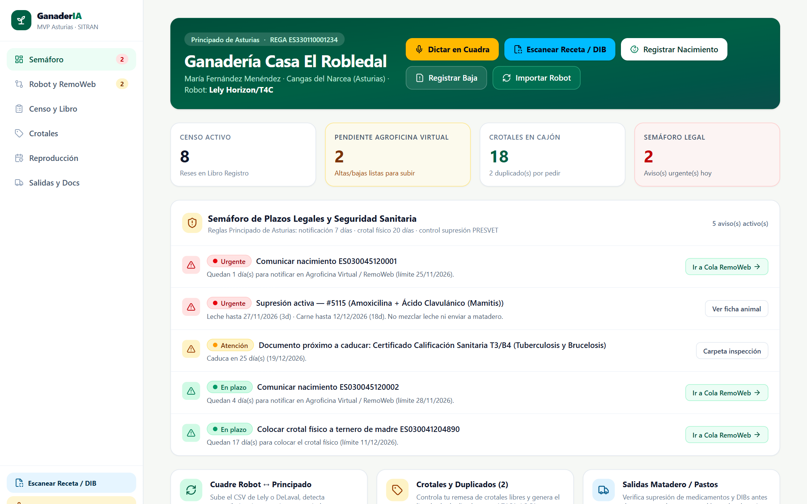

GanaderIA — Menos papeleo, cero multas en tu explotación

Atajos: Espacio reproducir/pausar · ← / → cambiar escena ·
M música · F pantalla completa
Capturas reales HD · Simulación de clics · Voz en off sincronizada · Música instrumental
